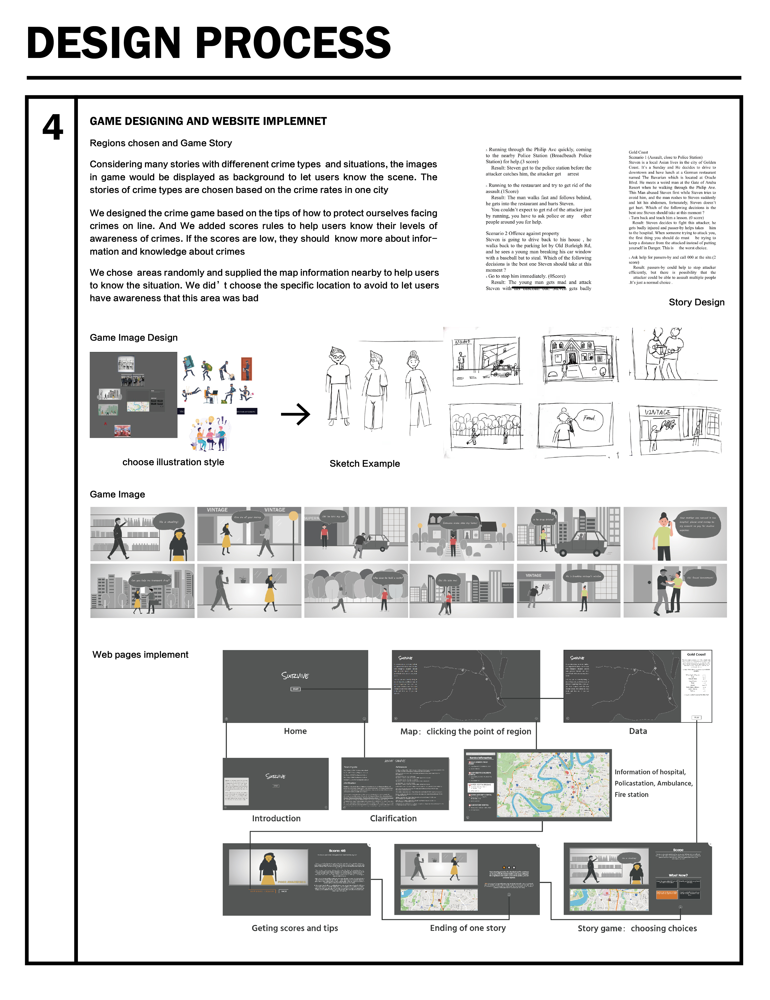

Final Requirement
1. Websites implement
2. Dealing with websites technologies
3. Preparing for Trade Show
My Contribution
1. Game stories braimstromings
2. Game illustrations drawing and design
3. Making poster for Tradeshow
4. helping to write report
Trade Show Result
Because of Covid 19, we took the course online and presented our websites on zoom in Trade Show. The Trade Show ended successfully.
When students and teachers listened our presentation and used our websites, they had positive experience because our websites were
worthwile and meaningful for teeangers to learn to face crimes. One teacher adviced that we could filter the information of hosipital, police stations
ambulance stations. We thought it could be a good advice. And when I introduced that the map on game helped users to know the game's situatuion
and the location chosen randomly to avoid people have bad awareness of one location, they acknowledged it and appreciated our intensions.
Reflection
1. When implementing the websites, I was not good at typing codes. Fortunately, with help of my teammates, I learn a lot of codes.
However, my teammates comtributed a lot in typing code. So I take responsibilities to design our websites. I thoughr team cooperation was very important
2. I thought it could be more fun and appealing to teenagers if the websites showed story illuatration with vivid animations.
However, these skills and technologies should be futher learned in the future.
3. Our websites implement and trade show were successfull at end. We got a lot of questions and acknowledges about our websites.
The Websites were well designed and constructed
Websites implementation

Technology
The webpage is divided into two parts: importing the database api and storyline. We use PHP to import the stories, choices
and endings stored in MySQL. Datasets and map informations are loaded by Javascript through API provided by government
official site.